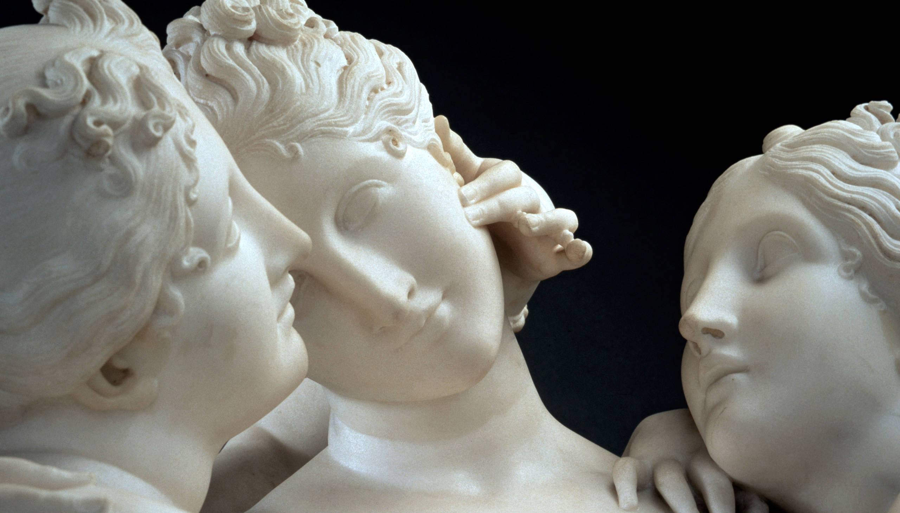

Regarded internationally as a masterpiece of neoclassical European sculpture,
The Three Graces was carved in Rome by Antonio Canova
(1757 – 1822) between 1815 and 1817 for an English collector.
This group of three mythological sisters was in fact a second
version of an original –
one commissioned by
Joséphine de Beauharnais, first wife of Napoleon Bonaparte.
Taking its motif from ancient Greek literature, The Three Graces depicts the three daughters of Zeus, each of whom is described as being able to bestow a particular gift on humanity: (from left to right) Euphrosyne (mirth), Aglaia (elegance) and Thalia (youth and beauty). The first version of this piece was commissioned by one of the era's most famous women, Joséphine de Beauharnais, who was by then the divorced first wife of Napoleon. In May 1814, before Antonio Canova had completed the sculpture, De Beauharnais died. John Russell, the 6th Duke of Bedford, visited Canova's studio in Rome in December that year and, impressed by the artistry of The Three Graces, told Canova he wanted to acquire the finished marble. De Beauharnais' son, Prince Eugène de Beauharnais, also wanted to buy the group his mother had commissioned, so Canova offered to make the Duke of Bedford a 'replica with alterations'.
At Woburn Abbey Canova's sculpture was displayed in the Temple of the Graces, a top-lit rotunda specially designed for it by the fashionable architect Jeffrey Wyatville, which was to the west end of the existing sculpture gallery. On a visit Canova made to Woburn in 1815, before this new space was built, the sculptor himself had apparently advised on the correct position and lighting to use for his piece. The Three Graces was set on what was thought to be an ancient marble plinth (in fact it dated from the 18th century), in such a way that it could be rotated, allowing the viewer to easily enjoy multiple viewpoints. In its purpose-built home the piece was surrounded by the many outstanding ancient sculptures of the Duke's collection, as well as works by contemporary British sculptors, notably Joseph Nollekens, Francis Chantrey and Richard Westmacott.